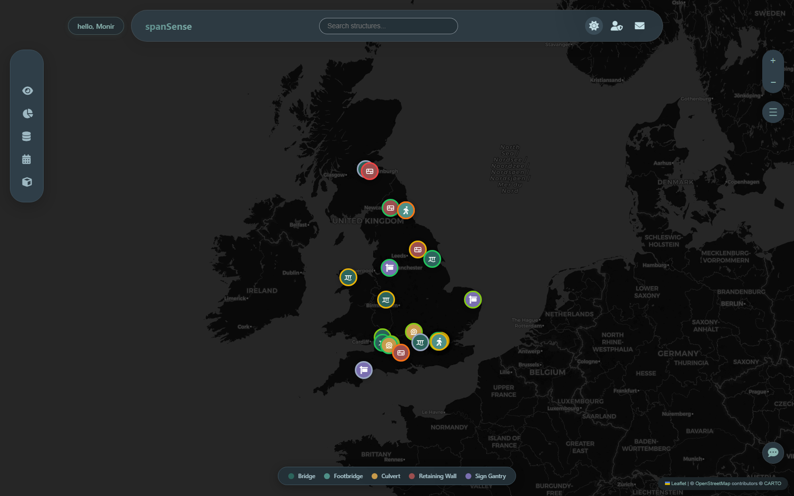
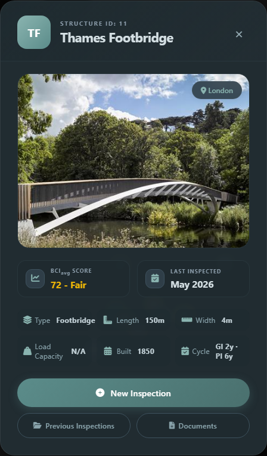
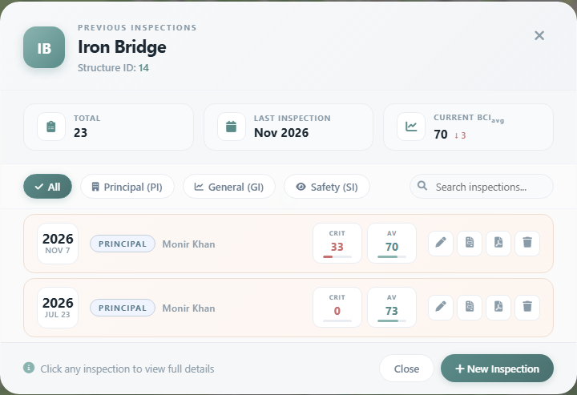
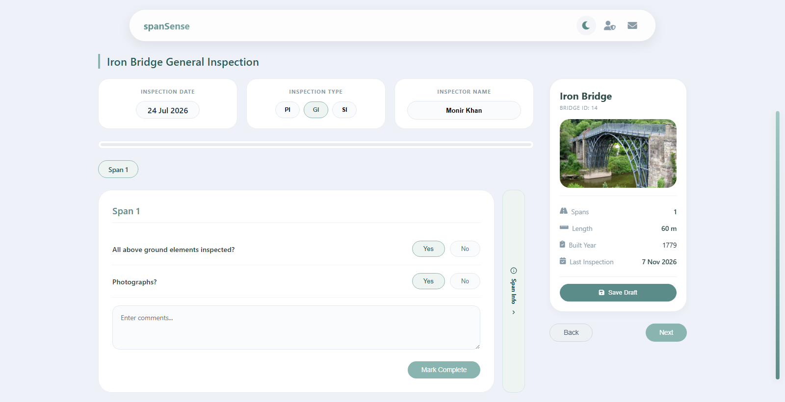
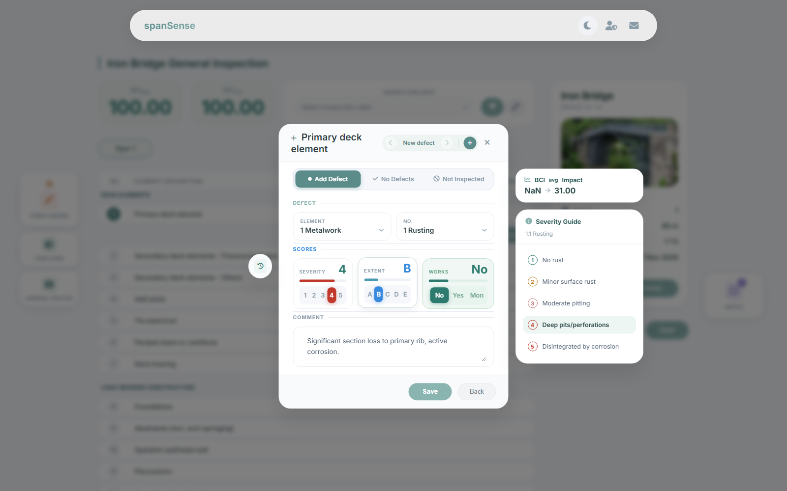
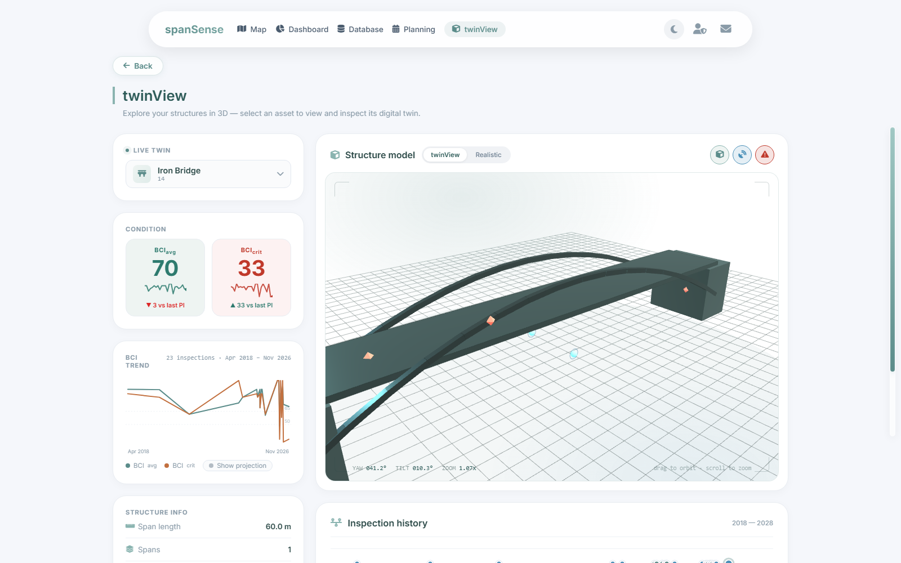
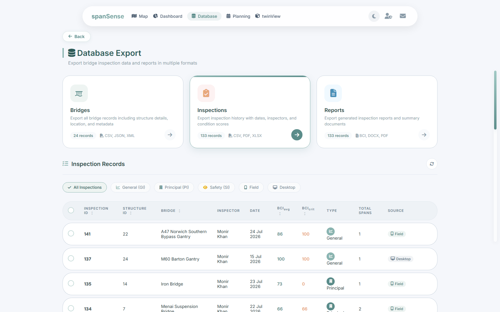
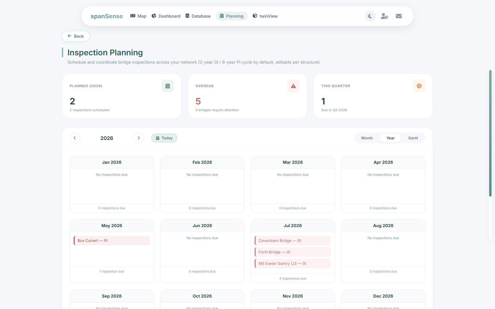
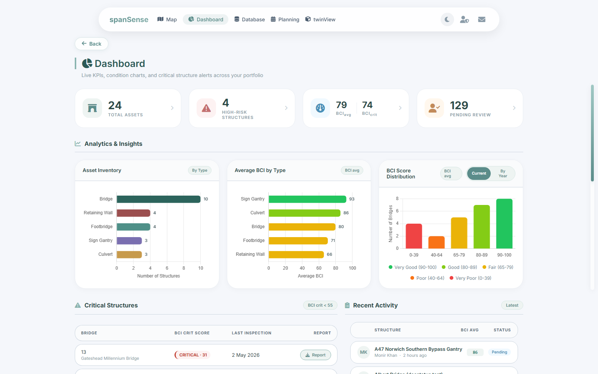
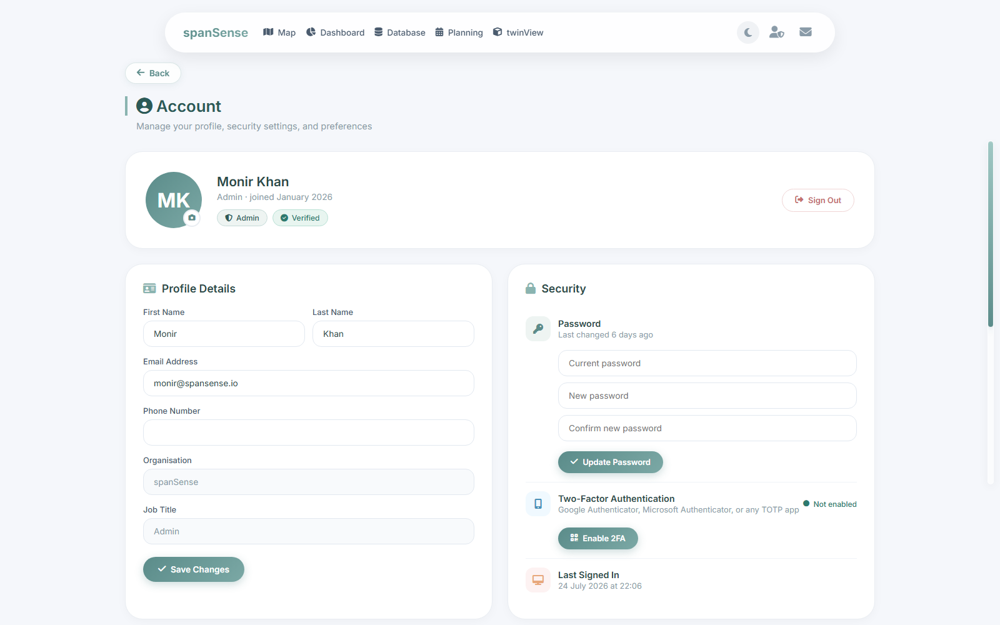

Find a structure, run an inspection, read the BCI score, and get the report out. Everything you need to use spanSense day to day, walked through step by step with real screenshots of the current platform.
A map of this guide.
01Getting Started3 02The Map: Finding a Structure4 03Viewing Previous Inspections5 04Running an Inspection, Step by Step6 05Understanding BCI Scores8 06twinView: 3D Digital Twin9 07Reports & Exporting Data10 08Inspection Planning & Scheduling11 09Dashboard: Portfolio Overview12 10Your Account & Preferences13A quick orientation before your first inspection.
Log in with the account your admin gave you, and you'll land on the Map. Its top bar just holds the logo, a search box, the night-mode toggle, your account icon, and Contact Us; the links to Dashboard, Database, Planning, and twinView live in a collapsible sidebar on the left edge instead (hover it to expand). Once you move to any of those other pages, that same set of links moves up into a floating navbar at the top. The account icon's shape tells you your role at a glance: a magnifying glass for inspectors, a checked user for engineers, a shield for admins.
| Role | Can do |
|---|---|
| Inspector | Find structures, run inspections, upload photos, view reports and planning |
| Engineer | Everything an inspector can, plus approve/reject submitted inspections and edit a structure's inspection schedule |
| Admin | Everything an engineer can, plus full system access |
Find your structure on the Map
Run a new inspection, or open an existing one from Previous Inspections
Save it, and the BCI score is calculated automatically as you go
An engineer reviews it from the Dashboard's Pending Review queue
Export a report whenever you need one, from the structure card or Database
The map is your home screen after login, and the starting point for almost everything.

Every structure plotted by type icon and condition-coded ring
Structures are plotted with a type-coded icon (bridge, footbridge, culvert, retaining wall, or sign gantry) and a condition-coded ring color, the same colors used everywhere else in the app, so a glance at the map already tells you which structures need attention.
Use the search bar at the top to jump straight to a named structure, or the sidebar filters on the left to narrow by type or condition
Click a marker to open its structure card: photo, BCI average score, last inspected date, span/length/year/type
From the card, choose New Inspection, Previous Inspections, or Documents

Click a marker to open its structure card
Every past inspection for a structure, in one searchable list.
Previous Inspections (opened from the structure card) shows the full record for that structure: total inspection count, the last inspection date, and the current BCI average with its trend against the one before it.

Filter, search, and act on any past inspection for this structure
The wizard is two steps: metadata, then defect logging element by element.
Confirm the inspection type (GI/PI/SI), date, and inspector, then work through each span's above-ground/photograph checks before moving on to the element checklist.

Every inspectable element is listed as a row. Click one and choose Add Defect, No Defects, or Not Inspected (with a reason)
For a defect, set Severity (1 Minor → 5 Emergency) and Extent (A isolated → E extensive). A live preview shows the BCI impact as you adjust them, before you save
Mark Works Required (No, Yes, or Monitor) and attach a photo if useful
If a rating is a big improvement over what was last recorded for that element, a confirmation prompt double-checks it before saving, as a quick safeguard against typos
Save the defect and move to the next row, or Save Draft at any point to finish later
Minor · Moderate · Severe · Critical · Emergency
How much of the element is affected, isolated to extensive
No, Yes, or Monitor; flags it for the planning programme
A short written summary once every element is done
Once every element is logged, add your Conclusions and hit Save. The BCI average and critical scores are calculated automatically from what you've logged, no manual math required. The inspection then enters the review queue for an engineer to approve.
A closer look at the previous-defects panel, the live BCI preview, the severity guide, and moving between defects, all without leaving the modal.

Open a defect for an element that's had one logged before, and a Previous Defects panel appears beside the modal, collapsed to a slim tab until you expand it. Each past defect shows as a card (Severity/Extent/Works badges, date, comment), three most recent first with a Load more option for the rest. Click a card to copy it straight into the form: severity, extent, works, cost, remedial works, and comment all fill in together, with a "From <date>" badge confirming it's a copy. Adjust what's changed, then save.
The Add Defect modal in night mode: Previous Defects expanded on the left with real history, Severity Guide flyout on the right
Move the Severity or Extent stepper and the BCI_avg Impact panel recalculates instantly: current score on the left, what it would become on the right. It uses the same calculation that produces the final report score, so there's no surprise once you save: red means your change makes the structure's score worse, green means it improves.
Not sure what separates a 3 from a 4? This panel spells out all five levels in plain language for the exact defect type and number picked, with your current selection highlighted.
| Lvl | 1.1 Rusting |
|---|---|
| 1 | No rust |
| 2 | Minor surface rust |
| 3 | Moderate pitting |
| 4 | Deep pits/perforations |
| 5 | Disintegrated by corrosion |
No need to close the modal to work through an element's defects:
BCIav and BCIcrit are calculated for you: no formula, no spreadsheet.
BCI avg is the condition across every inspected element, weighted by how structurally important each one is. BCI crit is narrower: each structure type has a fixed set of critical elements (e.g. main girders, bearings, abutments) and BCI crit is based purely on the worst condition among just those, not the worst element in the whole inspection. A bad defect on a non-critical element (a sign, a handrail) drags BCI avg down but leaves BCI crit untouched; if none of the critical elements have a defect, BCI crit reads 100. Both fall into the same five bands used everywhere in the app:
You'll see this exact banding in three places: the structure card, the Add Defect modal's live impact preview, and the Dashboard's BCI Score Distribution chart. twinView's condition panel is a bit coarser: it colors the score as just Critical, Fair, or Good, so treat it as a quick at-a-glance signal rather than the precise five-band read.
A 3D model of the structure, built from real span and condition data.
Pick a structure from the Live Twin selector at the top left
Drag to orbit, scroll to zoom, and toggle Structure, Sensors, Defects, and Works Required layers on or off
The Condition card shows current BCI avg/crit; Inspection Status below it shows the trend against the previous inspection
Use the Inspection History timeline to jump to any past inspection and see the model as it was then

Orbit and zoom the 3D model; the condition trend is right there in Inspection Status
Generate a report from one inspection, or export your whole stock from Database.

Choose a category, pick a format, and export; filters and a column picker are below
Never miss the next inspection, and it's tailored per structure.
By default, every structure follows a 2-year General Inspection / 6-year Principal Inspection cycle, alternating GI, GI, PI. Planning shows this as a Month calendar, a Year grid, or a multi-year Gantt view; click any inspection chip in Month or Year view to open its schedule editor directly.
Click the pencil icon next to any structure in the Gantt view (or an inspection chip in Month/Year view)
Set a custom GI or PI frequency in years if this structure needs a different cycle than the default
Or set a next inspection due date directly, if you need to move just the next one without changing the ongoing cycle
Save: every calendar view updates immediately

Year view: overdue inspections in red, upcoming in teal, principal inspections stand out separately
Your whole stock at a glance, every card is clickable.

Four live metric cards and the Analytics & Insights charts below
The Pending Review section further down lists every inspection awaiting a decision. Search, filter by type, or toggle "Critical only," then click Review to approve or reject with a comment, or open the full inspection first if you want to check the detail before deciding.
Open Account from any navbar to update your details or preferences.
Name, email, and organisation details
Change your password from here
Toggle from any navbar; your choice is remembered
The Map greets you by name once you're signed in

Your real profile, role, and join date, loaded from your account, not a placeholder
Stuck on something this guide didn't cover? Use Contact Us from any navbar and someone will get back to you.